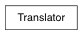

>>> ascii = Translator('mayaAscii') >>> ascii.ext u'ma' >>> bin = Translator.fromExtension( 'mb' ) >>> bin Translator(u'mayaBinary') >>> bin.name u'mayaBinary' >>> bin.hasReadSupport() True
pymel.core.system.ReferenceEdit
pymel.core.system.UndoChunk
Enter search terms or a module, class or function name.